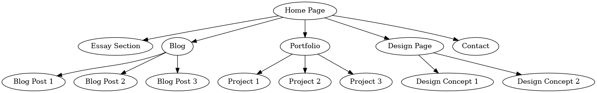

Week 1
Experience Setting up GitHub My experience of setting up Github wasn’t
difficult. With the tutorials given, I found it quite simple to follow
through.I learned the Github concepts and how to link VS Code to my
repo,as well as to how to publish pages which I found interesting.
Reflection On the readings
The reading I chose was The World-Wide Web by Tim Berners-Lee, Robert
Cailliau, Ari Luotonen, Henrik Frystyk Nielsen, and Arthur Secret. It
caught my attention because the web is used by everyone in the world
today who uses the internet. I found it mind blowing that it began as
just a pool of human knowledge that allowed collaborators to share
their ideas and knowledge on common project and how today it is
accessed by people who still want to gain knowledge, share knowlegde
or even learn something for different projects.
People today still type a text, in instances where they search for
something on the web to send to the server and in a second the
information related to the text would be presented. I think it is
amazing how technology has evolved whereas when the Web was developed
in the past, it could be accessed on the computer and now the Web can
be accessed across smart phones and It is not just limited to a
computer. In relation to the user interface of the server today
compared to past I would say it still the same if not similar as a W3
‘’client’’ program, displaying document with texts when it starts,
possibly images, the texts or phrases highlighted in blue. Today,
however, when you click on the highlighted area you usually get a
visual feedback on the area you have clicked like for instance the
highlighted area turning into a different colour. Therefore I would
like to think of The Web as an endless pool of information that can be
accessed by people who want access to information.
Interesting things I found about the history of the web The
interesting things I found about The History of the Web was its
timeline between 2001-2006 where Wikipedia was invented in 2001 and it
allowed everybody to contribute content and even edit , it was one way
where people could gain information on the web. Another thing I found
interesting was the realease of Safari in 2003. Safari is an Apple
browser and today it is still used, bigger than ever with its millions
of users of Apple around the world. I still use it today to read a
biography of my favourite celebrity. Youtube too, it was launched in
2005 as a video sharing platform. Today it is very popular and it even
generates income for millions of users.
Goals
My goals for Interactive Media is firstly to be a good in UI/UX
designing and to understand the concepts surrounding it as I value the
importance of user interface and user experience when I am using any
app that allows me to buy goods and services. I believe that a good
UI/UX is what makes an app successful. My other goal is to be able to
develop a website that is easy to follow through.
↑ Back to Top
Week 2
Stuart Moulthrop’s essay explores the evolution of hypertext, its
revolutionary potential, and its digital era effects. He shows how
hypertext develops from Vannevar Bush’s concept of the Memex, and how
it led towards the development of digital text as we understand it
today. Moulthrop also explores what happens when hypertext is pushed
to its limit, using Marshall McLuhan’s theory that every medium, when
pushes to its limits, reverses into its opposite. He also continues to
question whether hypertext as an interactive and open medium will join
the pattern of radio and television, which started as interactive but
later became corporate-controlled and hierarchical, so in essence he
questions whether hypertext would remain a tool of free interaction or
become a controlled system. How does this speak to the internet today?
The early web was an open space where users could contribute freely
and share knowledge or information. For instance, when Wikipedia was
developed in 2001, anyone could contribute and edit articles. But as
years went by, the internet followed the pattern of radio and
television becoming a controlled system that is dominated by big
corporate companies such as Google, Meta, Amazon etc that is driven by
algorithms, data collection and advertising. For instance social media
platforms such as Tiktok, Instagram and Facebook controls interactions
by dictating what we see using algorithms. While this may be a good
thing to some, the disadvantages is that it reduces the ability to
explore other things freely. We have come to notice that a web is now
a marketplace and most people rely on on it to market their businesses
or companies using advertisements.
Folder structure and URL Scheme
When designing my folder structure I aim for a clean structure to keep
my files organised. So for instance in my Root folder (/) will contain
main entry of the website being Index.html: This will direct users to
different sections like home, Blog, Portfolio and design process. Home
folder will contain (/home/) About.html where it will talk about myself
or my work Contact.html: where my contacts will be put Portfolio
(/portfolio/) Will showcase my previous projects so: index.html: The
portfolio landing page, listing all projects.
URL Scheme
URL Scheme and Decision-Making: About → mywebsite.com/home/about.html
Portfolio page → mywebsite.com/portfolio/ Inspirational websites
pexels:https://www.pexels.com/
What does interaction mean to me? To me it is about anticipation and
engagement. The internet allows users to not only consume content but
to interact with it by commenting or sharing making it an interaction
↑ Back to Top
Week 3
Mapping my Site’s Content, Experience, Interface
-
Content: I want my content to be structed so that users can easily
navigate my site. On my homepage, is going to be a brief
introduction about myself, a portfolio section of my work, a design
process of the site, Blog section where I will put all my weekly
blogs, and on the bottom of the page or footer, I will put my
contact details where people can reach me.
-
Experience: The navigation should feel intuitive, and the site
should be responsive on mainly a desktop. Quick loading times and
the user experience that include the styling will make the
experience even more engaging.
-
Interface Elements: It should be simple and easy to use. This
includes the navigation bar, search functionality, and
call-to-action buttons. Maybe on my footer is where I will give
links for details.
Linking User Alignment to URL Structure and Semantic Markup My URL
scheme should mirror the organization of my content, making it easier
for users to follow along, therefore I am going to have: • /portfolio to
showcase my work • /Blog/WeeklyBlogs for individual blog posts • /Design
Process for showing the structure of my website
Reflecting on Development Progress This week, I have been focusing on
organizing my site’s navigation, my hyperlinks and ensuring the
content flows logically. I have also worked on the wireframing to
structure how the contents of the website will be distributed and have
created descriptive URLs. For the semantic markup, I make sure to use
correct HTML tags to improve the accessibility of the website.
↑ Back to Top
Week 4
With my original wireframes for the Homepage I had a navigation bar
for each and every folder, an image and a header that welcomes users
to the website. For my blogs page, I had a navigation bar and a
section that would put images of the blogs. For my current design
section of my website, my website opens to a homepage. On the top of
the page , is the navigation bar that would allow you to click on
different sections such as the Portfolio, Design, and Blogs. Then
after the navigation section, it is followed by a header written
“Welcome t my page” accompanied by a picture of cars in the landscape
however this might change into something that would describe me best
such as an animated picture of myself. When the user is on the
Homepage, the tag to homepage ‘disables’ and shows it as a ‘heading’
or a text rather than a link to show as a visual communication. Then
next section after Homepage, is a Blogs section. Users can also access
it from a Homepage. When you click on the ‘Blogs’ , it takes you to
where the different blogs are located being Week 1-4, however this
might change. When the user is on the blogs page, users can still
access other folders from this page. The link to this page disables
when the user is on the page and shows it as a text, again for visual
communication to show that they are on that current page.
Challenges: Troubles with accessing other folders as they wouldn’t
open such as the portfolio Layout of the website as I didn’t know what
goes where Consistency of the navigation bar Microformats, as I didn't
know where exactly to put them on the website. I am proud of my Blogs
pages because it is a section where I think everything is in order if
not most of the things. However, Going forward I’d probably want to
change my URLs schemes, the consistency of the navigation bar or even
across the website and making all pages accessible without errors
Information structure:

↑ Back to Top
Week 7
An Analysis of UI and UX on the Property24 Website
https://www.property24.com/for-sale
In the current digital era, websites efficiency is mostly determined
on how well they balance between usability and visual attractiveness.
One of the top online real estate marketplaces in South Africa
Property24, offers a case studies for analyzing application of UI and
UX design. Even though the website is effective providing a user
experience that is visual pleasing and intuitive, it has its cons when
it comes to its universal accessibility.
Interface design refers to how users interact with websites, and the
user interface is emphasized by features like visual hierarchy,
responsiveness, layout, and navigation with that in mind Property24’s
user interface has been well designed. With the homepages noticeable
search-box, users will be able to start searching for properties based
on price, type, and location which is essential to users finding
properties based on a simplified searching tool. To provide a clear
and uncomplicated interface, the website also uses understandable
typefaces, a consistent color scheme, and enough white space.
Property24’s user interface is another thing that makes it good as the
website allows access on a laptop, tablet, or smartphone, and the
layout works well on all of them, so users have a smooth experience no
matter what device they use. There are high-resolution pictures, price
tags, and short details of each property listing, which makes it easy
for users to quickly decide if the property is right for them.
However, the UI is not without certain shortcomings. Some listing
pages have too much information on them, making them look cluttered
and a little overwhelming appearance.
An Analysis of UI and UX on the AutoTrader Website
https://www.autotrader.co.za/cars-for-sale
AutoTrader is South Africa’s leading digital platform for the selling
and purchasing of new and used cars. As website experience continues
to determine customers’ attitude, it is important for websites like
Autotrader to have balanced effective UI and UX. While Autotrader
succeeds in offering visual engaging and intuitive user experience, it
fails to ensure comprehensive accessibility for all users.
From a UI perspective, AutoTrader has demonstrated a high standard as
the homepage is easy to navigate with a prominent search bar allowing
users to filter vehicles by make, model, price and location. Because
of this functionality, consumers may interact with the platform right
away, demonstrating a user-first strategy, as fonts used are clear and
simple to navigate based on the bold headlines used, clear vehicle
photos and well-organized web page. However, it does not make it easy
to use for a range of gadgets including smartphones, with the design
of the filter setting.
However, the website does have some drawbacks, as noticed by the
general layout advertising banners on some listings pages can make
them visually overwhelming, as these components could divert users’
attention from their main objectives. Furthermore, the added filtering
feature sometimes breaks while navigating, requiring users to re-enter
their search parameters.
↑ Back to Top